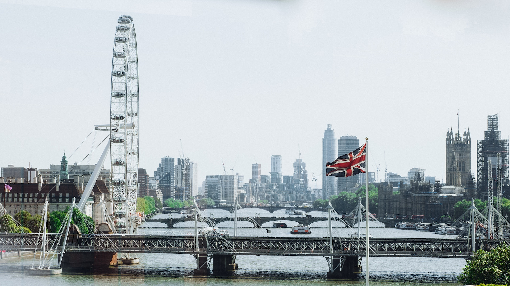
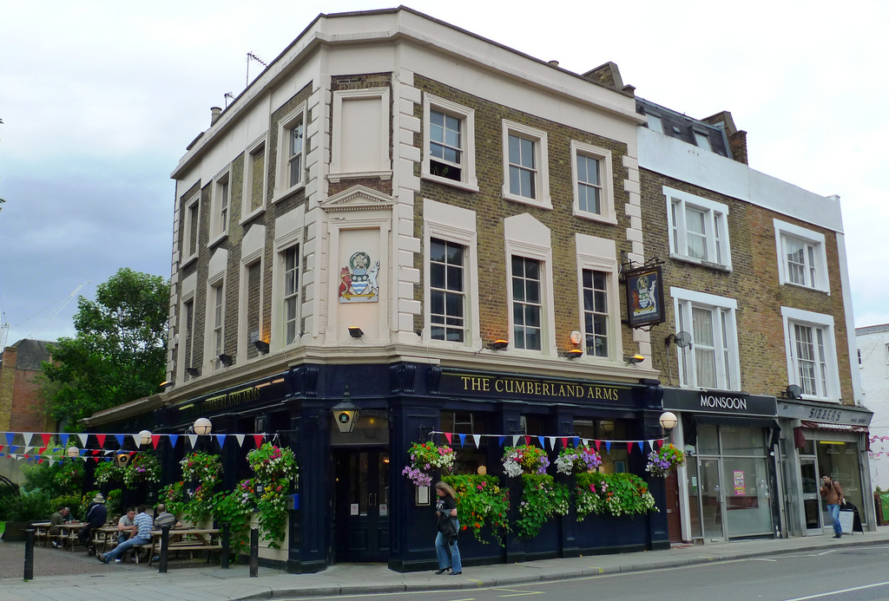

The glorious agency of the TSA, flight attendands, and pilots turned 9 hours at 40,000 feet into a new world as each member of our trip landed at London Hethrow on Tuesday morning. We were met by none other than Nicolaas Schimmel, and Chase Toretta - who Dr. Engle so gracously refered to as "the bag schleppers". Knowing these fine gentleman landed the crew freedom from 50 pounds of luggage during their first experience in "the tube", which is the english equivalent of the subway. For myself, it landed me my first beer in England all before noon. That single pint did wonders on taking the edge off of the pouring rain and soaked clothes I was about to experience during the trip from the airport to the flats. There is a lot of value in learning from experience, but remembering to bring an umbrella to one of the wettest countries on the planet is something I would have been fine not learning the hard way.
Nic and Chase showed us all to our flats at Richmond Court, where we would be staying for the next 10 days. The flats were suprisingly modern and clearly used an English version of Ikea as their primary furnishing retailer. We learned that the English consider the clothes washer to be a part of the kitchen as we found our respective units under the counters next to our sinks. None of our toaster ovens were completely functional, but I think that is the biggest complaint any of us had regarding the flats. And for 10 days in budget friendly flats designed for college students, I think that is a victory.
Being the last member of the crew to arrive, I had missed a crucial element of the trip that I will not be able to share. Apparently the staffer from the flats, Yogi, scheduled an orientation with us regarding our flats intended to answer any questions about our units and explain the day to day of Richmond Court. He wore a thick turtle neck sweater during a 90 degree day, a terrible demeaner, and had about as much knowledge of the flats as we did. Yogi's misinformation campaign became the subject of many jokes during the next 10 days that I understood roughly 30% of.
The London Eye

At around 2PM, we had our first "round table" meeting in 2A, the temporary residence of Dr. Engle. Seeing everybody had made if safely with all luggage in tact, "the bag schleppers" had cleary out done themselves in their noble pursuit of service. After our time in 2A, we set off to Westminister to see London from the eyes of the sky. By the time we made it to the base of the London Eye, I had officially lost 2 full outfits to the rain and acquired an umbrella comprised of potentiallly the lowest quality of materials known to corner drug stores abroad.
Dr. Engle Height
Actual Height
It was at the base of the London Eye where we first established 2 crucial dynamics of the group. First that Dr. Engle's hyperbolic sense of description was truly no match for Nicolaas Schimmel's international data plan and the wonderful world of google. Second, that Dr. Engle is undoubtedly a wizard specializing in the fine art of line seduction. There is no line that we couldnt finagle our way to the front of. He even managed to get our group of 10 people our own pod with an intended capacity of 28. So at the end of the day, altough "a mile in the sky" in Dr. Engles words might actually mean a casual 443 feet in a ferris wheel, getting our own pod made up for the magnititude 10 overestimate of altitude.
It was at the base of the London Eye where we first established 2 crucial dynamics of the group. First that Dr. Engle's hyperbolic sense of description was truly no match for Nicolaas Schimmel's international data plan and the wonderful world of google. Second, that Dr. Engle is undoubtedly a wizard specializing in the fine art of line seduction. There is no line that we couldnt finagle our way to the front of. He even managed to get our group of 10 people our own pod with an intended capacity of 28. So at the end of the day, altough "a mile in the sky" in Dr. Engles words might actually mean a casual 443 feet in a ferris wheel, getting our own pod made up for the magnititude 10 overestimate of altitude.
Next, we made our way back to towards Richmond Court via the trusty Piccadilly Line on the tube. It was time for our first exposure to English pubbery hosted by none other than The Cumberland. Being almost 6PM, it was clearly well past Jenna Agosta's personal bed time and Dr. Engle had made it very clear that our collective bed time was no earlier than 8PM. This rule was not forgotten. We had our second round table during our time at The Cumberland where we all talked about what we anticipated our favorite part of the trip would be. Now I would never tell Dr. Engle this, but personally, I had aleady forgotten every element of the itinerary and so this public pondering of anticipation had its clear challenges for me. There was no clear aspect of the trip that appeared to be the favorite at this time, but it seemed as though we were all simply excited to be in the city of London with our colleauges that we began to call friends.
The Cumberland
